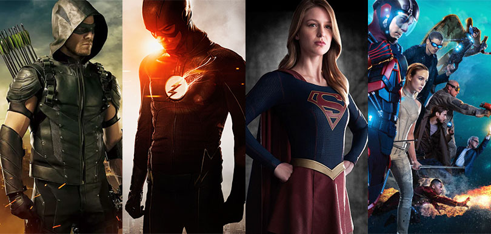
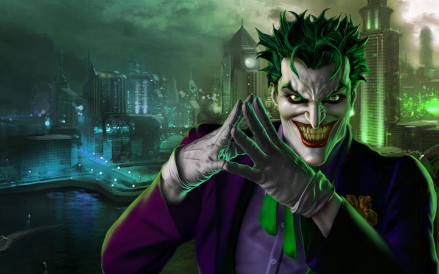
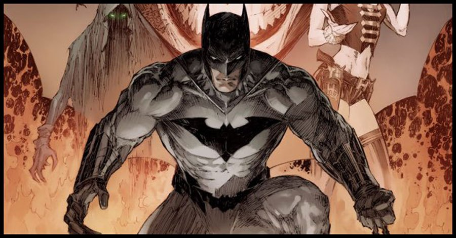
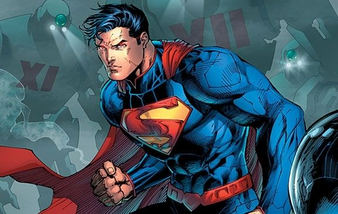

Justice League is a 2017 American superhero film based on the DC Comics superhero team of the same name, distributed by Warner Bros. Pictures. It is the follow-up to 2016's Batman v Superman: Dawn of Justice and the fifth installment in the DC Extended Universe (DCEU).[5][6][7] The film is directed by Zack Snyder, written by Chris Terrio and Joss Whedon, and features an ensemble cast that includes Ben Affleck, Henry Cavill, Gal Gadot, Ezra Miller, Jason Momoa, Ray Fisher, Amy Adams, Jeremy Irons, Diane Lane, Connie Nielsen, and J. K. Simmons. In the film, Batman and Wonder Woman recruit The Flash, Aquaman, and Cyborg after Superman's death to save the world from the catastrophic threat of Steppenwolf and his army of Parademons.
The film was announced in October 2014, with Snyder on board to direct and Terrio attached to write the script. Initially titled Justice League Part One, with a second part to follow in 2019, the second film was indefinitely delayed to accommodate a standalone Batman film with Affleck. Principal photography commenced in April 2016 and ended in October 2016. After Snyder stepped down to deal with the death of his daughter, Joss Whedon was hired to oversee the remainder of post-production, including directing additional scenes written by himself; Snyder retained sole directorial credit, while Whedon received a screenwriting credit. Justice League premiered in Beijing on October 26, 2017, and was released in the United States in 2D, Real D 3D, and IMAX on November 17, 2017.

JUSTICE LEAGUE
Joker
The Joker is a supervillain created by Bill Finger, Bob Kane, and Jerry Robinson who first appeared in the debut issue of the comic book Batman, published by DC Comics.

Batman
Batman is a fictional superhero appearing in American comic books published by DC Comics. A large assortment of villains make up Batman's rogues gallery, including his archenemy, the Joker.

Superman
Superman is a fictional superhero created by writer Jerry Siegel and artist Joe Shuster. He first appeared in Action Comics #1, a comic book published on April 18, 1938.

JUSTICE SOCIETY OF AMERICA
Most of their material takes place in the fictional DC Universe, which also features teams such as the Justice League, the Justice Society of America, the Suicide Squad, and the Teen Titans, and well-known villains such as The Joker, Lex Luthor, Catwoman, Darkseid, Sinestro, Brainiac, Black Adam, Ra's al Ghul and Deathstroke. The company has also published non-DC Universe-related material, including Watchmen, V for Vendetta, and many titles under their alternative imprint Vertigo.
The initials "DC" came from the company's popular series Detective Comics, which featured Batman's debut and subsequently became part of the company's name. Originally in Manhattan at 432 Fourth Avenue, the DC Comics offices have been located at 480 and later 575 Lexington Avenue; 909 Third Avenue; 75 Rockefeller Plaza; 666 Fifth Avenue; and 1325 Avenue of the Americas. DC had its headquarters at 1700 Broadway, Midtown Manhattan, New York City, but it was announced in October 2013 that DC Entertainment would relocate its headquarters from New York to Burbank, California in April 2015.
Random House distributes DC Comics' books to the bookstore market, while Diamond Comic Distributors supplies the comics shop specialty market. DC Comics and its longtime major competitor Marvel Comics (acquired in 2009 by The Walt Disney Company, WarnerMedia's main competitor) together shared approximately 70% of the American comic book market in 2017.
Hall of Justice
The Hall appeared in the very first episode of the Super Friends series, which premiered on September 8, 1973. It was originally drawn by Al Gmuer, background supervisor for Hanna-Barbera for more than 30 years. Gmuer modeled the fortress after the art deco Union Terminal in Cincinnati, Ohio, a train station turned museum. Cincinnati was also where Hanna-Barbera's corporate parent of the time, Taft Broadcasting, happened to be based.
The Hall serves as the central meeting point for the Super Friends. Wonder Woman's Invisible Jet and the Batmobile would often be spotted resting on the front lawn, near the large fountain and sculpture that were ever present. The Hall contains the TroublAlert, a computerized station that would warn the heroes of a new threat. The Hall also houses a giant computer that the Super Friends use to analyze clues. By the mid-1980s, The Hall of Justice had a major remodel, larger and more dome-like, with a general pentagon shape, although the entrance resembled the earlier version; at the same time the Super Friends changed their superhero team moniker to the Super Powers Team.